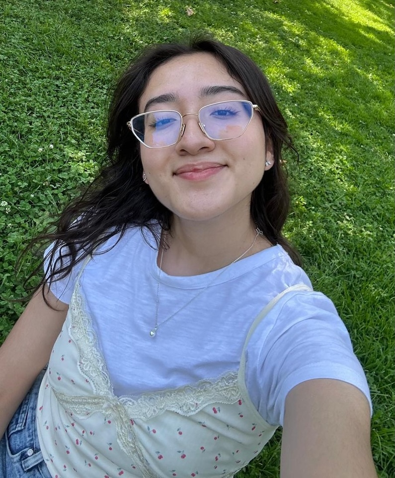
Daniela
President
Daniela
Joined Girls Who Code in 2023 and found a welcoming community that inspired her to grow in AI, software development, and algorithms. She loves Conan Gray, coffee, webtoons, and building miniature RoLife creations.
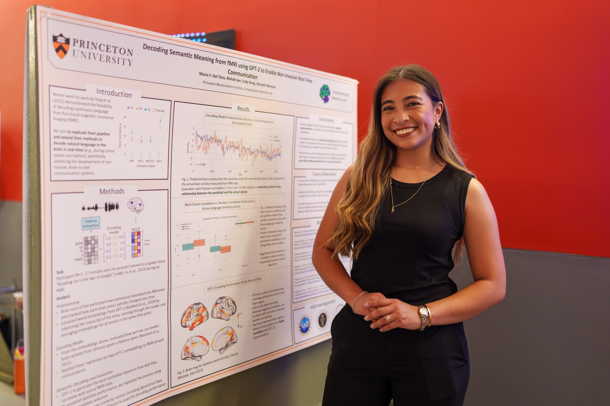
Fernanda
Vice President
Fernanda
A non-traditional student passionate about AI, neuroscience, and software engineering, with dreams of becoming a Machine Learning Engineer. She values representation in STEM and, outside of tech, enjoys exploring, walking, and Cinepolis Takis Fuego popcorn.
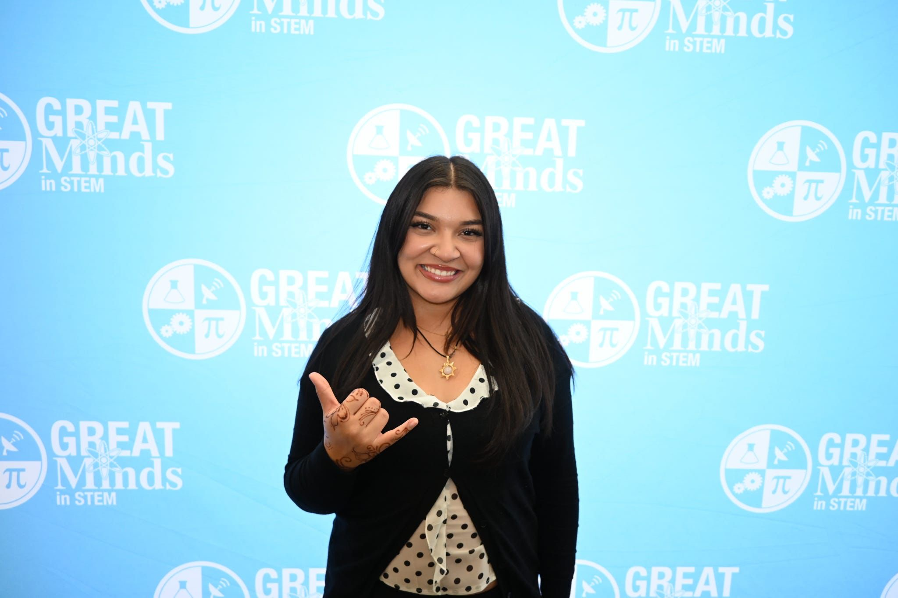
Aleida
Vice President
Aleida
Joined Girls Who Code to find a community of supportive women who inspire and push each other to succeed. She enjoys crocheting, playing guitar, discovering new music, and was part of a mariachi for four years.
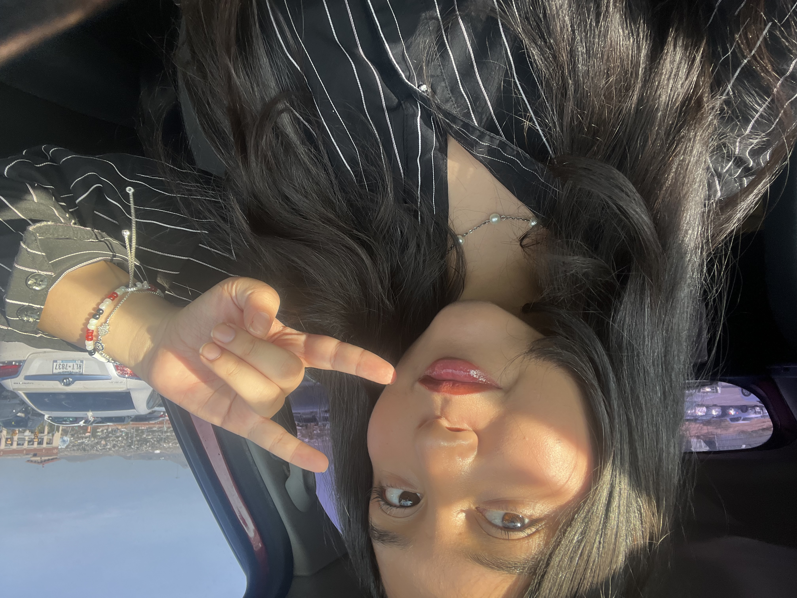
Niza
Social Media Manager
Niza
Joined Girls Who Code to combine her love for art–writing, singing, and photography–with technology, discovering how creativity strengthens innovation. She values sisterhood and strives to inspire other girls to feel curious and confident in tech.
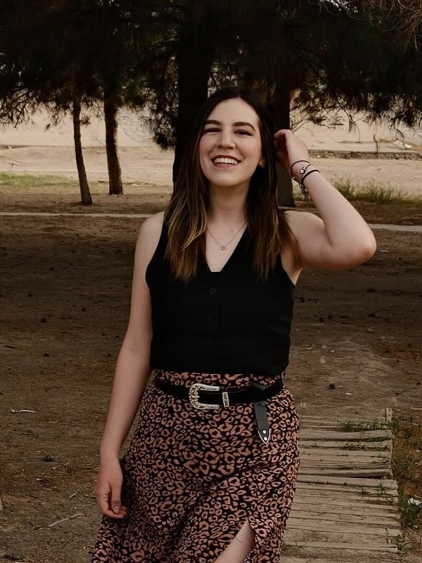
Pamela
Social Media Manager
Pamela
Loves coding, problem-solving, and using her skills to empower women and girls in STEM, blending her background in design and marketing. Outside of tech, she enjoys music, travel, fitness, and embracing the belief that you can do anything you set your mind to.
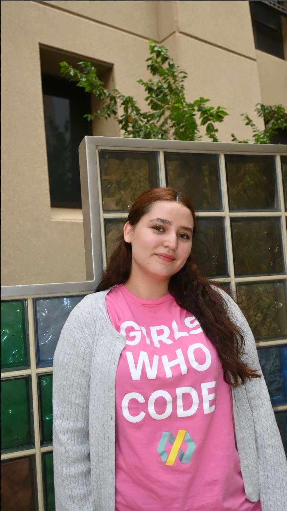
Frida
Treasurer
Frida
Loves the welcoming girlhood of GWC and chose Computer Science because of its broad opportunities and diverse fields to explore. Outside of tech, she enjoys baking, reading, traveling, photography, hiking, and volunteering with her therapy dog, Loony, at community events and hospitals.
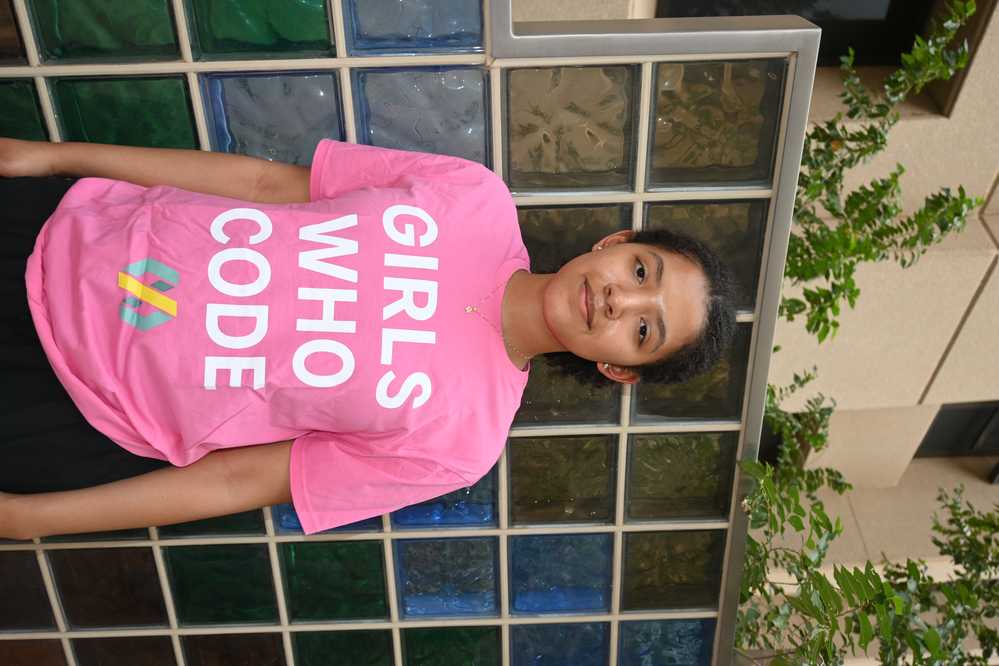
Selene
Technical Officer
Selene
Passionate about cybersecurity and software architecture, fascinated by how vulnerabilities are discovered, patched, and how systems are designed. Outside of tech, she enjoys reading poetry and playing the bass guitar.
Caelyn
Technical Officer
Caelyn
Joined Girls Who Code to grow her leadership skills and be part of a supportive community, with interests in machine learning and front-end design. She is creatively driven, enjoys sewing, and loves Marvel, anime, Adventure Time, and sharks.
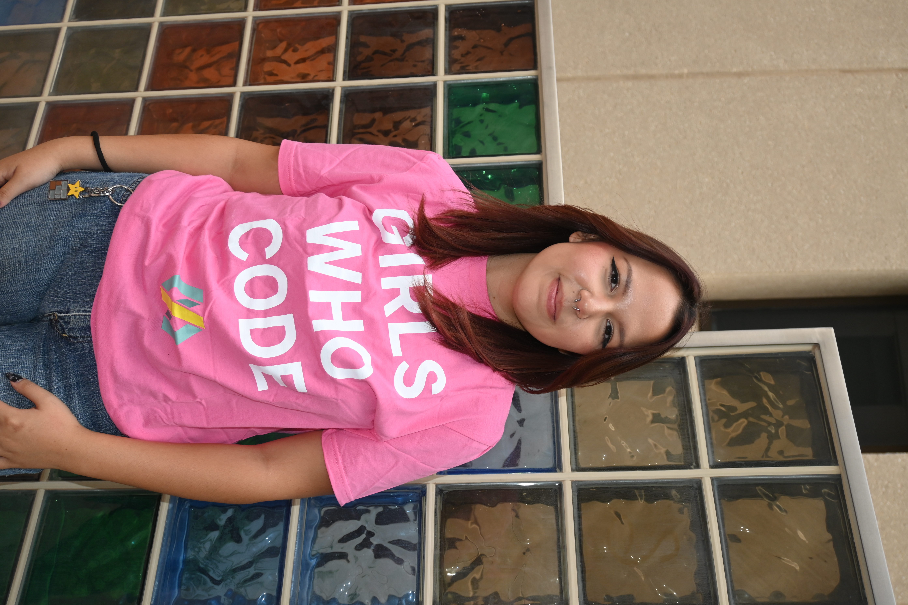
Sabina
Community Outreach Coordinator
Sabina
Interested in front-end development, data science, UI/UX, and loves object-oriented programming, believing that strong communities build strong candidates. A certified cat lady, she also enjoys superheroes, The Last of Us, coffee shops, and movie nights.
Monet
Secretary
Monet
Passionate about data science, AI, machine learning, and analytics, with a love for numbers, precision, and uncovering insights through data. A first-generation student from El Paso, she enjoys running, traveling, trying new recipes, reading, and listening to Junior H.
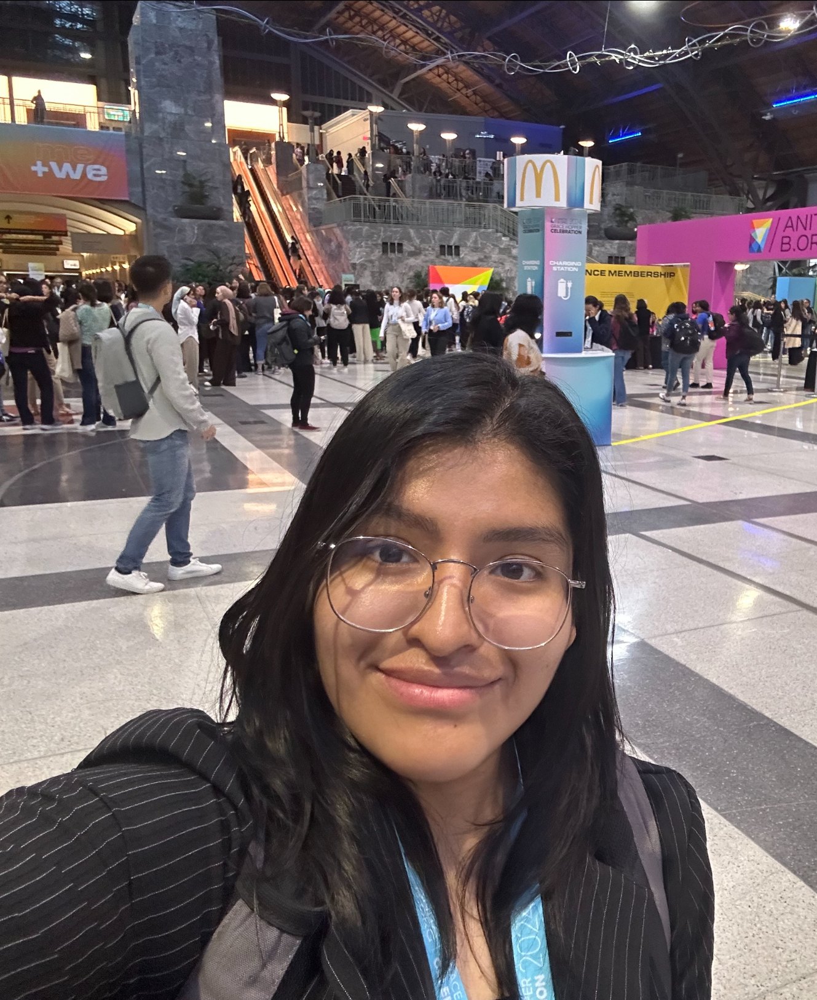
Gabriela
Historian
Gabriela
Passionate for science and math began with building robots and coding, which inspired her to join Girls Who Code and admire the supportive community it offers. She enjoys puzzles and traveling, both of which challenge her to think deeply, adapt, and discover new perspectives.
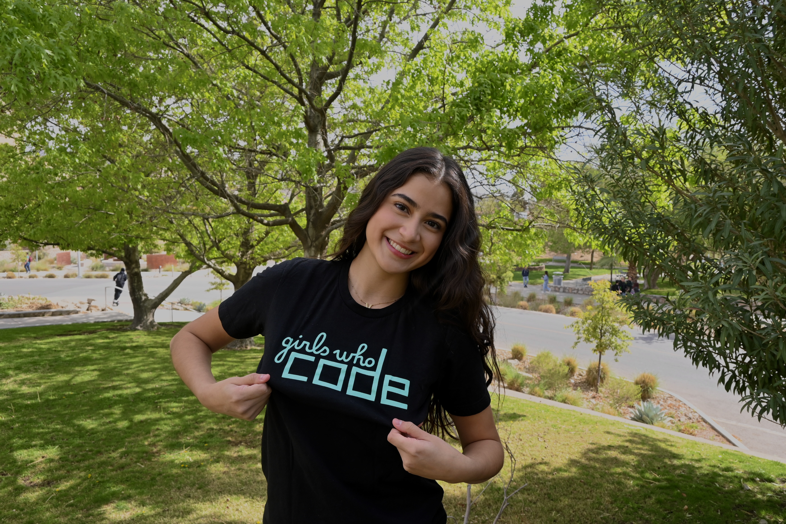
Vianey
Member Outreach Coordinator
Vianey
Joined Girls Who Code to find community and mentorship in computer science, with a special passion for creative front-end development. Outside of tech, she loves Takis, kombucha, beach volleyball, and being active in Greek life.
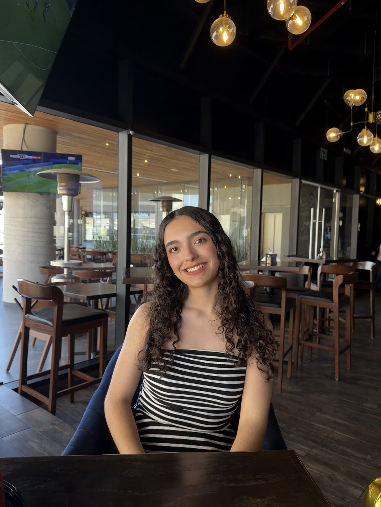
Johanna
Project Manager
Johanna
Joined Girls Who Code to grow her skills, collaborate with women in tech, and explore creative applications of computer science, with interests in web development, AI, and problem solving. She enjoys basketball, traveling, spending time with loved ones, and discovering new foods and cultures.
Victoria
Event Coordinator
Victoria
Switched from finance to computer science, later interning at Google and developing a passion for AI, machine learning, and data analysis. She's found a supportive community in Girls Who Code and enjoys concerts and pottery.

Alexa
Webmaster
Alexa
Joined Girls Who Code to be part of a supportive community of women in engineering and is especially interested in programming across both software and hardware. She is a cinephile, plays several instruments from marimba to strings, and is currently learning sign language.